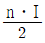
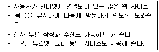
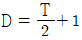
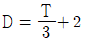
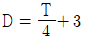
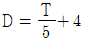
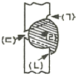

자기비파괴검사기사(구) (2010-07-25 기출문제)
1과목: 자기탐상시험원리
1. 재질이 다른 경계부에서 누설자속이 형성되는 주된 원리에 대한 설명으로 옳은 것은?
- 투자율의 차이
- 표피효과의 차이
- 전기전도도의 차이
- 표면거칠기의 차이
(정답률: 알수없음)

2. 강자성체의 내부에는 미세한 자구(Magneic domain)가 무수히 많지만 이들에 자장을 가하기 이전에는 자성을 나타내지 않는다. 주된 이유는?
- 자구의 배열이 무질서하기 때문에
- 자장의 세기가 너무 미약하기 때문에
- 외부 누설자장은 없지만 내부에는 강하게 자화되어 있기 때문에
- 자장이 가해지면 그 자장의 에너지로 외부에 자장을 나타내기 때문에
(정답률: 알수없음)
3. 용접 후 열처리 들이 필요할 때 용접부를 자분탐상시험하여 합격여부 판정을 위한 일반적인 시험 시기로 가장 적합한 것은?
- 최종 열처리 후
- 용접완료 후 즉시
- 용접완료 12시간 경과 후
- 용접완료 24시간 경과 후
(정답률: 알수없음)
4. 투자율에 대한 SI단위로 옳은 것은?
- Wb/m2
- Wb(또는 weber)
- H/m
- Tesla
(정답률: 알수없음)
5. 직선 도체에 500[A]의 전류가 흐르고 있을 때 그 도체의 축에서 수직으로 20[cm] 떨어진 점의 자계의 세기는 약 몇 A/m 인가?
- 19.9
- 39.8
- 199
- 398
(정답률: 알수없음)
6. 솔레노이드 내부에서의 자계의 세기 H는? (단, 전류의 세기를 I, 솔레노이드 1m당 감은 수를 n이라 한다.)

- nㆍI
- 2nㆍI
- 4nㆍI
(정답률: 알수없음)
7. 누설검사에 사용되는 온도계 중 비접촉식 온도계는?
- 색온도계
- 유리온도계
- 저항온도계
- 열전온도계
(정답률: 알수없음)
8. 핵연료봉과 같은 방사성 물질의 결함 검사에 적합한 비파괴검사법은?
- 누설시험
- 초음파탐상시험
- 중성자투과시험
- 와전류탐상시험
(정답률: 알수없음)
9. 적절한 자화가 이루어지지 않기 때문에 자분참상시험으로 검사하기 곤란하며, 투자율이 공기보다 다소 높은 재질을 무엇이라 하는가?
- 상자성체
- 초자성체
- 강자성체
- 비자성체
(정답률: 알수없음)
10. 와전류탐상시험이 가능하지 않은 대상물은?
- 고무 막대
- 강철 막대
- 구리 막대
- 알루미늄 막대
(정답률: 알수없음)
11. 일반적으로 검사 후 결함의 크기 및 형상을 장기적으로 보전하기 적합하여 많이 사용되는 비파괴검사법은?
- 누설시험
- 침투탐상시험
- 자분탐상시험
- 방사선투과시험
(정답률: 알수없음)
12. 누설검사법 중 가열양극 할로겐법의 장점이 아닌 것은?
- 사용이 간편하고, 휴대용이다.
- 대기압 하에서 작업할 수 있다.
- 모든 추적 가스에 응답이 가능하다.
- 기름에 막혀있는 누설을 검출할 수 있다.
(정답률: 알수없음)
13. 다른 비파괴검사법과 비교한 침투탐상시험의 장점에 대한 설명으로 틀린 것은?
- 적용 방법이 비교적 간단하다.
- 모든 불연속의 검출이 가능하다.
- 불연속에 대한 평가가 비교적 쉽다.
- 원리가 비교적 간단하고 이해하기 쉽다.
(정답률: 알수없음)
14. 자분탐상시험과 비교한 침투탐상시험의 특징으로 틀린 것은?
- 조작 단계가 독립적이며, 각각의 단계별 절차를 지키는것이 중요하다.
- 표면으로 열린 결함이라도 결함 안에 이물질로 채워져 있으면 검출하기 어렵다.
- 일반적으로 자분탐상시험은 시간이 경과하여도 지시모양이 변하지 않으나 침투탐상시험은 변한다.
- 자분탐상시험에 비해 침투탐상시험은 온도의 영향을 적게 받으므로 온도변화에 의한 탐상이 유리하다.
(정답률: 알수없음)
15. 강자성체가 외부의 자화력에 의해 더 이상 자화되지 않는 온도를 무엇이라 하는가?
- 임계온도
- 큐리온도
- 변태온도
- 전이온도
(정답률: 알수없음)
16. 방사선투과시험과 비교하여 초음파탐상시험의 장점을 설명한 것으로 옳은 것은?
- 한 면만으로도 탐상이 가능하다.
- 시험체의 표면이 거친 경우에 유리하다.
- 탐상을 위한 접촉매질이 필요하지 않다.
- 탐상의 기준이 되는 표준시험편이나 대비시험편이 필요하지 않다.
(정답률: 알수없음)
17. 전기 회로에 교류를 흘렸을 경우 전류의 흐름을 방해하는 정도를 나타내는 용어는?
- 인덕턴스
- 리액턴스
- 임피던스
- 포기펄스
(정답률: 알수없음)
18. 광학적 성질을 이용한 스트레인측정법만의 조합으로 옳은 것은?
- X성회절법, 중성자회절법
- 응력도료법, Thermography
- 전기저항법, 와전류탐상법
- 광탄성피막법, 모아레(Moire)법
(정답률: 알수없음)
19. 각종 비파괴검사에 따른 적용법이 잘못 연결된 것은?
- 방사선투과시험 : 용접부내 기공 검출
- 초음파탐상시험 : 강판의 라미네이션 검출
- 와전류탐상시험 : 선재의 표면결함을 고속으로 검출
- 자분탐상시험 : 오스테나이트계 스테인리스강의 표면 균열 검출
(정답률: 알수없음)
20. 파괴시험을 대신하여 비파괴시험이 급속히 보급되고 있는 이유로 적합하지 않은 것은?
- 검사의 경제성
- 적용 범위의 확대
- 검사 결과의 신속성
- 결함 원인 판정이 용이
(정답률: 알수없음)
2과목: 자기탐상검사
21. 프로드법에서 전극에 구리망사를 입히는 주된 이유는?
- 전류가 잘 통하도록 도와준다.
- 전극부위의 자속밀도를 높이기 때문이다.
- 검사품에 골고루 자계를 유도하기 위함이다.
- 접촉면을 넓게 하고 스파크에 의한 제품의 손상을 줄이기 때문이다.
(정답률: 알수없음)
22. 자분탐상검사 중 형광-습식법을 사용하는 것이 바람직한 경우는?
- 밸브 몸체의 주조결함 검사
- 대형 볼트의 나사산의 균열검사
- 알루미늄 배관의 측방향 용접부 검사
- 대형 압력용기의 원주방향 용접부의 검사
(정답률: 알수없음)
23. 자분탐상검사 적용 방법 중 원형자화가 형성될 수 있는 것은?
- 극간법
- 코일법
- 영구자석법
- 직각통전법
(정답률: 알수없음)
24. 잔류법으로 검사할 때 가장 많이 검출되는 무관련지시는?
- 자극지시
- 자기펜흔적
- 재질경계지시
- 단면급변지시
(정답률: 알수없음)
25. 원자력발전소 및 석유화학 공장의 유지보수에 사용 중인 배관 이종 재질 용접부를 자분탐상시험한 결과 판별하 수 없는 자분지시가 확인되었다. 비파괴검측면에서 무관련 지시를 판별할 수 있는 가장 적합한 방법은?
- 표면복제법(Replica Method)
- 음향방출시험
- 현미경시험
- 육안검사
(정답률: 알수없음)
26. 다음 중 직접 자화법의 국부자화법에 해당되는 것은?
- 코일법
- 축통전법
- 프로드법
- 중심도체법
(정답률: 알수없음)
27. 가공 후 나타날 수 있는 결함이 유사한 가공방법으로 짝지어진 것은?
- 단조-압연
- 인발-압출
- 압연-인발
- 압출-단조
(정답률: 알수없음)
28. 압연된 환봉의 표면 심(seam)을 자분탐상검사하는데 가장 적합한 방법은?
- yoke를 이용한 선형자화
- coil을 이용한 원형자화
- prod를 이용한 선형자화
- 축동전법을 이용한 원형자화
(정답률: 알수없음)
29. 육안 관찰 접근이 어렵고, 기계가공품질이나 물리적 치수등 표면조건을 확인할 수 있는 시험법은?
- 자화 고무법(Magnetic Rubbr Test)
- 자분탐상시험(Magnetic Particle Test)
- 자화프린트 시험(Magnetic Printing Test)
- 자기 페인트 시험(Magnetic Painting Test)
(정답률: 알수없음)
30. 누설자속탐상시험에서 결함으로부터 누설하는 자속을 검출하는 센서에 요구되는 기능이 아닌 것은?
- 자기감도가 높을 것
- 전류 및 전압에 민감하게 작동할 수 있을 것
- 기계적으로 견고하고 온도 등 사용환경의 영향이 적을 것
- 검출하는 결함으로부터 누설자속을 충실히 검출할 수 있는 현상 및 치수를 가질 것
(정답률: 알수없음)
31. 표면하 불연속의 검출에 대한 감도가 가장 좋은 자분탐상시험방법은?
- 교류전류를 이용한 습식법
- 교류전류를 이용한 건식법
- 직류전류를 이용한 습식법
- 직류전류를 이용한 건식법
(정답률: 알수없음)
32. 형광자분을 이용하여 자분탐상검사하는 경우 관찰 장소의 밝기는 몇 lx 이하인 것이 바람직한가?
- 20
- 50
- 100
- 500
(정답률: 알수없음)
33. 강자성 물질의 결함을 건식법으로 검출할 때 가장 발견하기 어려운 것은?
- 아주 좁은 균열
- 흩어져 있는 내부 기공
- 단조 겹침
- 언더컷(undercut)
(정답률: 알수없음)
34. 자분탐상시험에서 원형자계를 적용할 경우 장점이 아닌 것은?
- 극이 필요하지 않다.
- 강한 자장이 가능하다.
- 조작이 일반적으로 간단하다.
- 시험편을 접촉시키지 않아도 된다.
(정답률: 알수없음)
35. 자화된 시험체의 결함부분으로부터 누설하는 자속을 검출하는 누설자속탐상법의 장점이 아닌 것은?
- 결함의 정량 측정이 가능하다.
- 복잡한 시험체의 형상에 적용이 용이하다.
- 작업환경이 양호하고 고도의 기량이 필요하지 않다.
- 고속주사가 가능하고 출력이 전기신호로 얻어지므로 자동화가 가능하다.
(정답률: 알수없음)
36. 거친 단조품의 자분탐상검사에서 쉽게 발견될 수 있는 결함은?
- 피로 균열
- 열처리 균열
- Forging laps
- 그라인딩 균열
(정답률: 알수없음)
37. 누설자속탐상 시험장치에서 자장검출용 센서로써 큰 영역을 주사하는데 적합하고, 자속의 누설영역이 넓은 오목한 결함 등의 검출에 적합한 센서는?
- Search coil
- Hall 소자
- 자기저항효과 소자
- 자기다이오드
(정답률: 알수없음)
38. 선형자계에 의한 시험체를 자화시키는 방법은?
- 코일법
- 축통전법
- 전류관통법
- 자속관통법
(정답률: 알수없음)
39. 자화된 재료가 큐리점에 도달하면 어떤 현상이 일어나는가?
- 자성을 잃는다.
- 더 강하게 자화된다.
- 자화 강도에는 변화가 없다.
- 탈자된 후 다시 본래대로 자화된다.
(정답률: 알수없음)
40. 자분탐상검사에서 표준시험편의 사용에 대한 설명이 아닌 것은?
- 통전방법과 통전시간의 설정
- 검사체면의 유효자계 범위의 확인
- 의사자분모양과 대조 확인이 필요할 때
- 검사액의 농도, 자성의 저하 및 조작의 적부조사
(정답률: 알수없음)
3과목: 자기탐상관련규격및컴퓨터활용
41. 철강 재료의 자분탐상 시험방법 및 자분모양의 분류(KS D 0213)에 의해 탐상결과 얻은 자분모양을 모양 및 집중성에 따라 분류한 것이 아닌 것은?
- 연속한 자분모양
- 독립한 자분모양
- 균열에 의한 자분모양
- 군집한 자분모양
(정답률: 알수없음)
42. 보일러 및 압력용기에 대한 자분탐상시험(ASME Sec.V Art.7)에서 지시모양의 기록에 대한 설명으로 옳은 것은?
- 불합격지시는 선형 혹은 원형으로 기록한다.
- 시험체 두께별 합격기준치를 정하여 기록하여야 한다.
- 등급별, 종류별로 불합격지시의 기준치를 분류하여 기록하여야 한다.
- 시험체의 재질 및 두께에 따라 불합격 기준치를 모두 기록하여야 한다.
(정답률: 알수없음)
43. 철강 재료의 자분탐상 시험방법 및 자분모양의 분류(KS D 0213)에 따라 탐상시험 후 탈자하지 않아도 되는 경우는?
- 시험 후 시험체를 열처리할 때
- 시험체가 마찰부분에 사용될 때
- 시험 후 시험체를 정밀 기계 가공할 때
- 시험체의 잔류자기가 계측장치에 영향을 미칠 때
(정답률: 알수없음)
44. 보일러 및 압력용기에 대한 자분탐상검사(ASME Sec.V Art.7)에서 코일을 사용하여 긴 시험체를 자화할 때 1회 자화시의 최대 길이로 옳은 것은?
- 25cm
- 30cm
- 38cm
- 45cm
(정답률: 알수없음)
45. 철강 재료의 자분탐상 시험방법 및 자분모양의 분류(KS D 0213)에 규정한 의사모양에 해당되지 않는 것은?
- 오염지시
- 자극지시
- 자기펜자국
- 표면거칠기지시
(정답률: 알수없음)
46. 보일러 및 압력용기에 대한 표준자분탐상검사ASME Sec.V Art.25 SE-709)의 습식 자분용 링시험편에서 전파정류전류(FWDC)가 1400A 일 때 시스템의 성능 확인을 위해 나타나야 할 최소 구멍수는?
- 3
- 4
- 5
- 6
(정답률: 알수없음)
47. 철강 재료의 자분탐상 시험방법 및 자분모양의 분류(KS D 0213)의 자분적용에 대한 설명으로 틀린 것은?
- 잔류법에서는 자화조작 종료 후에 자분을 적용한다.
- 연속법에서는 자화조작 중에 자분의 적용을 완료한다.
- 습식법의 경우 검사액의 유속이 과도하지 않도록 해야한다.
- 건식법의 경우 시험면에는 가벼운 진동도 주어서는 안된다.
(정답률: 알수없음)
48. 보일러 및 압력용기에 대한 자분탐상시검사(ASME Sec.V Art.7)에서 두께가 1/2인치 인 시험체를 프로드법으로 검사할 때 프로드 간격에 따른 전류치의 범위로 옳은 것은?
- 60~90 암페어/인치
- 90~110 암페어/인치
- 110~125 암페어/인치
- 120~135 암페어/인치
(정답률: 알수없음)
49. 철강 재료의 자분탐상 시험방법 및 자분모양의 분류(KS D 0213)에서 자화방법의 부호 중 “B"가 의미하는 것은?
- 극간법
- 코일법
- 축동전법
- 전류관통법
(정답률: 알수없음)
50. 철강 재료의 자분탐상 시험방법 및 자분모양의 분류(KS D 0213)에 따른 탐상시험시 자화전류에 대한 설명 중 틀린 것은?
- 교류를 써서 자화하는 경우는 원칙적으로 표면 흡의 검출에 한한다.
- 맥류는 그것에 함유된 교류성분이 클수록 내부 흠의 검출성능이 낮다.
- 교류는 표피효과의 영향에 의해 표면 아래의 자화는 직류와 비교하여 크다.
- 직류를 써서 자화하는 경우는 표면 흠 및 표면근접의 내부의 흠을 검출할 수 있다.
(정답률: 알수없음)
51. 보일러 및 압력용기에 대한 표준자분탐상검사(ASME Sec.V Art.25 SE-709)에서 비형광자분의 색상 중 건식자분에 일반적으로 자주 사용되지 않는 색상은?
- 붉은색(red)
- 파란색(blue)
- 검은색(black)
- 노란색(yellow)
(정답률: 알수없음)
52. 철강 재료의 자분탐상 시험방법 및 자분모양의 분류(KS D 0213)의 자화 전류에 관한 설명 중 옳은 것은?
- 교류 사용시는 원칙적으로 연속법에 한한다.
- 충격전류를 사용할 때에는 연속법에 한한다.
- 직류를 사용할 때에는 연속법만 사용할 수 있다.
- 액류는 그것에 포함되는 교류성분이 큰 만큼 내부 결함의 검출 성능이 높다.
(정답률: 알수없음)
53. 보일러 및 압력용기에 대한 표준자분탐상검사(ASME Sec.V Art.25 SE-709)에서 건식자분을 사용시 표면온도가 최대 몇 ℃ 일 때까지 사용할 수 있는가?
- 150
- 225
- 275
- 315
(정답률: 알수없음)
54. 항공우주용 자기탐상 검사방법(KS W 4041)에 따라 결함 검출을 위하여 피복된 시험체의 도금 두께는 몇 mm를 초과할 수 없는가?
- 0.127
- 0.254
- 0.381
- 0.508
(정답률: 알수없음)
55. 보일러 및 압력용기에 대한 자분탐상검사(ASME Sec.V Art.7)에서 자화전류가 직류인 요크(YOKE)장비는 사용최대 극간 거리에서 인상력(Lifting Power)이 몇 kg 이상이어야 하는가?
- 4
- 4.5
- 10
- 18
(정답률: 알수없음)
56. OSI-7계층 중 데이터 링크 계층에 대한 설명으로 옳은 것은?
- 정보를 구문형식으로 변환한다.
- 프레임의 전달을 담당한다.
- 절차적인 규격에 대해서 규정한다.
- 목적지까지 패킷을 전달한다.
(정답률: 알수없음)
57. 다음이 설명하고 있는 것은?

- 웹 브라우저
- 인터넷 전화
- 전자 상거래
- 인터넷 쇼핑몰
(정답률: 알수없음)
58. 컴퓨터에서 사용되는 소프트웨어는 응용 소프트웨어와 시스템 소프트웨어로 구분된다. 다음 중 시스템 소프트웨어에 해당하지 않는 것은?
- 운영체제
- 컴파일러
- 유틸리티
- 패키지
(정답률: 알수없음)
59. 사용자로 하여금 모아놓은 여러 개의 검색엔진 중 원하는 검색엔진 하나를 선택해서 검색할 수 있는 것은?
- 메타 검색엔진
- 키워드형 검색엔진
- 디렉토리형 검색엔진
- 로봇 에이전트형 검색엔진
(정답률: 알수없음)
60. 컴퓨터 바이러스를 예방하는 방법으로 볼 수 없는 것은?
- 정기적으로 바이러스를 검사한다.
- 항상 최신의 공개 프로그램을 다운로드한다.
- 불법 복사하지 않고 정품을 사용한다.
- COMAND. COM 파일의 속성을 읽기 전용으로 만든다.
(정답률: 알수없음)
4과목: 금속재료학
61. 중성 영욕 중에서 처리한 강재가 산화, 탈탄작용을 일으키는 원인이 아닌 것은?
- 환원성, 중성가스 분위기 때문에 강재를 침식시킨다.
- 염 중에 포함된 유해 불순물 때문에 용융 로벽의 침식과 강재의 산화가 일어난다.
- 고온에서 용융된 염욕이 대기 중의 산소와 반응하여 염기성으로 변화됨으로써 강재를 침식시킨다.
- 중성염 자체의 흡습성에 의한 수분으로 산화 및 탈탄이 발생한다.
(정답률: 알수없음)
62. 다음 중 가단주철의 특징으로 옳은 것은?
- 담금질 경화성이 없다.
- 백주철의 시멘타이트로부터 흑연을 생성한다.
- Ce로 흑연을 구상화해서 만든다.
- Mg로 흑연을 구상화해서 만든다.
(정답률: 알수없음)
63. Sn-Sb-Cu계 합금으로 주석계 화이트 메탈을 무엇이라고 하는가?
- 다우메탈
- 배빗메탈
- 바이메탈
- 징크알로이메탈
(정답률: 알수없음)
64. 마그네슘(Mg)에 대한 설명으로 틀린 것은?
- 감쇄능이 주철보다 커서 소음방지 구조재로 우수하다.
- 조밀육방형 격자구조이므로 상온에서의 냉간가공성이 우수하다.
- 절삭가공성은 양호하나 미세한 부스러기는 발화의 위험성이 있다.
- 알루미늄의 합금원소와 구상흑연주철의 구상화제로 사용된다.
(정답률: 알수없음)
65. 초경합금 구를 사용한 경도 보고서에 600HBW 1/30/20이라고 적혀 있을 때 각각의 의미를 설명한 것 중 틀린 것은?
- 600은 브리넬 경도값이 600을 의미한다.
- 1은 구의 체적이 10mm3 임을 의미한다.
- 30은 시험하중이 30kgt 를 의미한다.
- 20은 누르개를 이용하여 20초 동안 시험편을 누르는 시간을 의미한다.
(정답률: 알수없음)
66. 조성이 AI에 3~8%Cu, 3~8%Si을 첨가한 합금으로 Si는 주조성을 개선하고, Cu는 피삭성을 개선시킨 합금은?
- Silumin
- Lautal
- Durana metal
- Delta metal
(정답률: 알수없음)
67. 아연이 대기 중에서 산화되어 얇은 막을 형성하였다. 이러한 얇은 막에 대한 설명으로 틀린 것은?
- 막은 금속과 대기를 차단한다.
- 막은 공기 중의 습기를 차단한다.
- 막은 내부 부식을 방지한다.
- 막을 통해 점점 부식되어진다.
(정답률: 알수없음)
68. 섬유강화금속의 2차 가공에 대한 설명으로 틀린 것은?
- 섬유와 기지의 탄성, 소성변형률 및 열팽창률이 비슷하기 때문에 가공 작업이 쉽다.
- 가열을 수반하는 가공에서는 섬유와 가지(matrix)사이의 계면반응에 의한 특성열화에 유의해야 한다.
- 섬유의 손상이나 배향이 흐트러지지 않도록 가공재나 소재의 취급에 유의해야 한다.
- 일반적으로 섬유는 단단하고 기지는 부드러우므로 절삭성의 차이에 유의해야 한다.
(정답률: 알수없음)
69. 불스 아이(Bull's eye) 조직을 관찰할 수 있는 주철은?
- 회주철
- 백주철
- 가단주철
- 구상흑연주철
(정답률: 알수없음)
70. 고상석출과정이 아닌 다른 과정에 의해 형성된 산화물등의 제2상이 전위의 장해물로 모상을 강화시키거나, 회복, 재결정과 같은 연화과정을 방해하여 고온에서의 재료의 강도를 유지하게 하는 강화방법은?
- 석출강화
- 고용체강화
- 분산강화
- 결정립미세화강화
(정답률: 알수없음)
71. 순철의 변태에 관한 설명 중 틀린 것은?
- 동소변태는 A3와 A4 변태가 있다.
- A2 변태점을 시멘타이트의 자기변태점이라 한다.
- 자기변태는 강자성에서 상자성으로 변화하는 변태이다.
- 가열과 냉각속도를 무한히 늦추면 A3와 A4는 일치하게 된다.
(정답률: 알수없음)
72. Ni기 초내열 합금에서 고온 중 높은 강도를 유지할 수 있는 역할을 γ' 석출상이 하는데 γ‘ 상의 화학조성은?
- Ni3(AlㆍTi)
- Al3(NiㆍTi)
- Ti3(NiㆍAl)
- Mo3(AlㆍCo)
(정답률: 알수없음)
73. 합금강에서 오스테나이트 구역의 확대 원소가 아닌 것은?
- Ni
- Mn
- Co
- Mo
(정답률: 알수없음)
74. 융점이 높아 용해가 곤란하여 주로 분말 야금법으로 성형하는 금속으로 고속도강의 첨가 원소로도 사용되는 것은?
- Au
- Ag
- W
- Cu
(정답률: 알수없음)
75. 탄소강에 비한 합금강의 장점을 설명한 것 중 틀린 것은?
- 유냉 또는 공냉해도 경화하므로 잔류응력이 적고 인성이 높다.
- 담금질성이 좋아 대형부품도 깊이 경화하고 이것을 뜨림하면 균질한 조직이 되어 강인성이 얻어진다.
- 합금원소는 Fe3C에 고용하거나 특수탄화물을 형성하여 강도를 높이고 내마모성이 좋아진다.
- 특수 탄화물은 오스테나이트화 온도에서 고용속도가 작고 미용해 탄화물은 오스테나이트 결정립의 미세화를 방지하여 조대 마텐자이트가 얻어져 인성이 높아진다.
(정답률: 알수없음)
76. Sn을 10% 이내로 함유하고 있고 내식성과 내마모성이 좋아 가계주물이나 미술공예품으로 사용하는 Cu-Sn 합금은?
- 양백
- 주석청동
- 함석황동
- 고강도황동
(정답률: 알수없음)
77. 10g의 Au-Ag 합금에 Ag가 5% 함유되어 있을 때, Au의 순도(K, carat)는? (단, 기타 원소는 무시한다.)
- 20.6K
- 22.8K
- 23.6K
- 24.8K
(정답률: 알수없음)
78. 소성변형의 가공방법을 설명한 것 중 틀린 것은?
- 압연가공 : 회전하는 Roll 사이에 소재를 통과시켜 성형
- 압출가공 : 다이를 통하여 금속을 밀어내어 균일한 단면을 갖는 제품을 성형
- 인발가공 : 괴상의 소재를 고온에서 가압하여 성형
- 프레스가공 : 판재를 펀치와 다이 사이에 압축하여 성형
(정답률: 알수없음)
79. 펄라이트에 대한 설명 중 옳은 것은?
- 고용체 a와 금속간화합물 Fe3C와의 혼합조직이다.
- 서브제로 처리에 의하여 얻어지는 조직이다.
- 오스테나이트에서 급냉각시 생성되는 조직이다.
- 오스테나이트에서 냉각시 결정입내에 먼저 핵생성한다.
(정답률: 알수없음)
80. 다음 중 경화능을 향상시키는 원소의 영향이 큰 순서에서 작은 순서로 나열된 것은?
- Cu＞Mn＞B＞Cr
- Cr＞Cu＞B＞Mn
- B＞Mn＞Cr＞Cu
- Mn＞Cr＞Cu＞B
(정답률: 알수없음)
5과목: 용접일반
81. 아크 용접에서의 극성 설명으로 올바른 것은?
- AC 정극성은 용접봉(-)극, 모재(+)극이다.
- DC 역극성은 용접봉(-)극, 모재(+)극이다.
- DC 정극성은 용접봉(-)극, 모재(+)극이다.
- AC 역극성은 용접봉(-)극, 모재(+)극이다.
(정답률: 알수없음)
82. 산소-아세틸렌가스 용접에서 판 두께와 토치의 용량에 따라 용접봉 지름을 결정하는데, 모재의 두께가 1[mm]이상일 때 가스용접봉을 결정하는 식은? (단, D : 용접봉의 지음[mm], T : 판 두께[mm]




(정답률: 알수없음)
83. 그림의 수평자세 V형 홈이음 용접에서 용입 불량은 어느 부분인가?

- (ㄱ)
- (ㄴ)
- (ㄷ)
- (ㄹ)
(정답률: 알수없음)
84. 산소-아세틸렌 불꽃과는 달리 백심(flame cone)이 있는 뚜렷한 불꽃을 얻을 수가 없고, 청색의 겉불꽃에 싸인 무광의 불꽃으로 육안으로 불꽃을 조절하기 어렵고, 납(Pb)의 용접이나 수중절단용 예열불꽃으로 사용되는 불꽃은?
- 산소-프로판 불꽃
- 산소-석탄가스 불꽃
- 산소-메탄가스 불꽃
- 산소-수소 불꽃
(정답률: 알수없음)
85. 내용적 40ℓ의 산소용기에 140kgf/cm2의 산소가 들어있다. 1시간당 350ℓ를 사용하는 토치를 쓰고 이때의 혼합비가 1:1의 중성화염이면 이론적으로 약 몇 시간이나 사용 하겠는가?
- 16
- 20
- 32
- 46
(정답률: 알수없음)
86. 피복 아크 용접 회로에 아크전류가 흐르는 순서의 표시로 가장 적합한 것은?
- 용접기→용접봉홀더→아크→모재→용접기
- 용접기→홀더→아크→용접봉→모재→용접기
- 용접기→아크→용접봉→모재→홀더→용접기
- 용접기→홀더→용접봉→아크→모재→용접기
(정답률: 알수없음)
87. 피복 아크 용접에서 아크 전압이 30V, 아크 전류가 150A, 용접속도는 15cm/min일 때 용접부에 주어지는 용접 입열량은 몇 Joule/cm인가?
- 22500
- 13500
- 24500
- 18000
(정답률: 알수없음)
88. 가스용접에서 중압식 토치의 아세틸렌 사용압력(kgf/cm2)의 범위로 가장 적합한 것은?
- 5~10
- 0.07~1.3
- 3~5
- 0.07 이하
(정답률: 알수없음)
89. 용접 시 발생하는 회전변형의 방지대책 설명으로 틀린 것은?
- 필요에 따라 용접끝 부분을 구속한다.
- 미리 수축을 예측하여 그 만큼 벌려 놓는다.
- 길이가 긴 경우 2명 이상의 용접사가 이음의 길이를 정해 놓고 동시에 용접을 시작한다.
- 용접 시 열을 될 수 있는 한 많이 받게 한다.
(정답률: 알수없음)
90. 2시간 동안 용접작업 중 78분 동안 아크를 발생시키고, 42분 동안 아크를 발생시키지 않았다면, 이 용접기의 사용율은?
- 35%
- 42%
- 65%
- 78%
(정답률: 알수없음)
91. 용해 아세틸렌을 충전하였을 때 용기 전체의 무게가 61kgf이었는데, 다 쓰고 난 후 빈 용기를 달아보았더니 59kgf이었다. 소비한 아세틸렌가스 량으로 가변압식 가스 용접토치 300번 팁으로 용접하였다면, 용접한 시간은 약 몇 시간인가?
- 약 6 시간
- 약 8 시간
- 약 10 시간
- 약 12 시간
(정답률: 알수없음)
92. 독일식 용접 토치로 20 mm 연강 판을 용접하려 할 때 필요한 팁(tip)의 번호는?
- 5번
- 10번
- 20번
- 30번
(정답률: 알수없음)
93. 수동용접에 비해 능률이 높고 열에너지의 손실이 적으며 용입이 대단히 깊고 장호용접 이라고도 하는 용접은?
- 서브머지드 아크용접
- 불활성가스 아크용접
- 원자수소 아크용접
- 이산화탄소 아크용접
(정답률: 알수없음)
94. 불활성가스 금속 아크용접기로 알루미늄 및 알루미늄합금을 용접할 때 용적이행에 따라 분류되는데, 임계전류 이하의 저전류에서도 안정된 아크 상태에서 용적이 이행되며, 스패터가 극히 적어 비드가 깨끗하고 작업성이 매우 우수한 용접법은?
- 단락 아크 용접
- 고전류 아크 용접
- 스프레이 아크 용접
- 펄스 아크 용접
(정답률: 알수없음)
95. 다음 중 가장 얇은 판 이음에 적용되는 용접 홈은?
- H형 홈
- X형 홈
- V형 홈
- I형 홈
(정답률: 알수없음)
96. 다음 용접종류 중 압접에 속하는 것은?
- TIG 용접
- 테르밋 용접
- 전기저항 용접
- 일렉트로 슬래그 용접
(정답률: 알수없음)
97. 용접결함 중 치수상의 결함이 아닌 것은?
- 스트레인 변형
- 용접부 크기의 부적당
- 접합 불량
- 용접부 형상의 부적당
(정답률: 알수없음)
98. 다음 용접재료 중 이상화탄소 아크 용접에 가장 적합한 것은?
- 알루미늄
- 스테인리스 강
- 동과 구리합금
- 연강
(정답률: 알수없음)
99. 서브머지드 아크 용접에서 2개의 와이어에 전류를 직렬로 흐르게 하여 아크를 발생시켜 아크 복사열에 의해 모재를 가열 용융시켜 용접하는 방식이며 스테인리스 강 등의 덧붙이 용접에 잘 쓰이는 방식은?
- 탠덤식
- 자기식
- 횡 직렬식
- 횡 병렬식
(정답률: 알수없음)
100. 아주 많은 용접선이 이루어진 용접 구조물의 조립 및 용접 순서로 가장 적합한 것은?
- 끝에서 중앙으로, 상하 대칭으로 시공한다.
- 끝에서 중앙으로, 상하 비대칭으로 시공한다.
- 중앙에서 끝으로, 상하 대칭으로 시공한다.
- 중앙에서 끝으로, 상하 비대칭으로 시공한다.
(정답률: 알수없음)